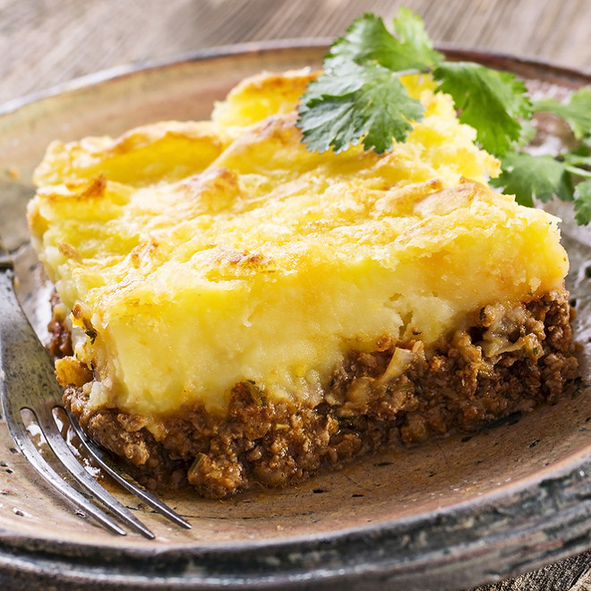

Hachis parmentier

Description
Le hachis Parmentier ou hachis parmentier, est un plat à base de purée de pommes de terre et de viande de bœuf hachée.
Ce gratin doit son nom à l'apothicaire Antoine Parmentier, qui, convaincu que le tubercule pouvait combattre efficacement la disette, le fit goûter à Louis XVI.
Ingredients
- 500g de pomme de terre
- 200g boeuf haché
- 1/2 oignon
- 55g de beurre
- 50g de gruyere
- 1 oeuf
- 1 carrote
- persil plat
- muscade
- set et poivre
Steps
-
Commencez par faire chauffer une marmite d'eau salée, épluchez les pommes de terre, lavez-les, coupez-les en gros morceaux, puis plongez-les dans l'eau frémissante, couvrez et laissez cuire environ 30 min.
Pendant cette cuisson, pelez l'oignon et la carotte et hachez-les très finement au couteau. Prélevez la chair de la tomate et coupez-la en dés. Ciselez finement le persil.
Mettez le tout dans une poêle avec 20 g de beurre, et faites revenir quelques min, de façon à faire dorer la viande et à lui donner du goût.
-
Quand les pommes de terre sont cuites, égouttez-les puis réduisez-les en purée à l'aide d'une fourchette ou d'un presse-purée (surtout pas de mixeur qui rendrait la texture trop collante et liquide) tout en incorporant le beurre, la muscade, du sel, du poivre et quelques cuillerées d'eau de cuisson.
-
Ensuite, préchauffez le four th.7 (210°C), puis étalez 10 g de beurre dans le fond d'un plat à gratin pour 4 personnes.
Pour dresser votre hachis parmentier, commencez par répartir la garniture au boeuf et aux aromates dans le fond du plat, puis recouvrez avec la purée maison, nappez avec l'oeuf battu et étalé au pinceau, saupoudrez avec le fromage râpé, et ajoutez éventuellement quelques copeaux de beurre pour bien que ça gratine et que ça dore.
-
Enfournez le hachis parmentier pendant plus ou moins 30 min (jusqu'à ce qu'il soit bien doré), puis servez-le chaud ou tiède avec une salade verte, une salade de tomates ou une salade d'endives.